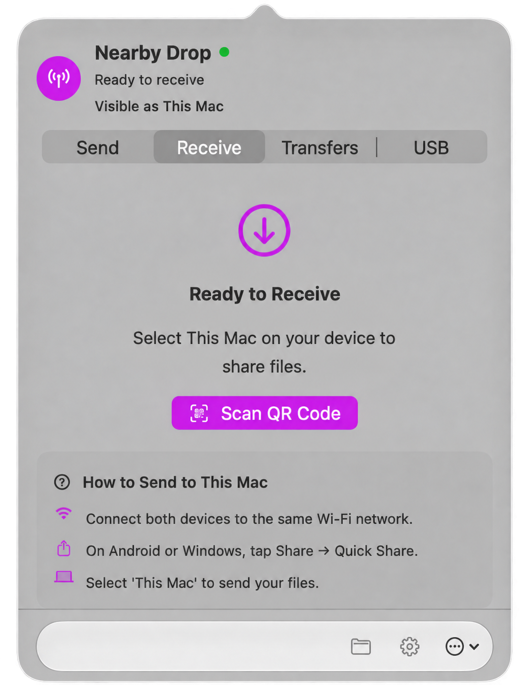
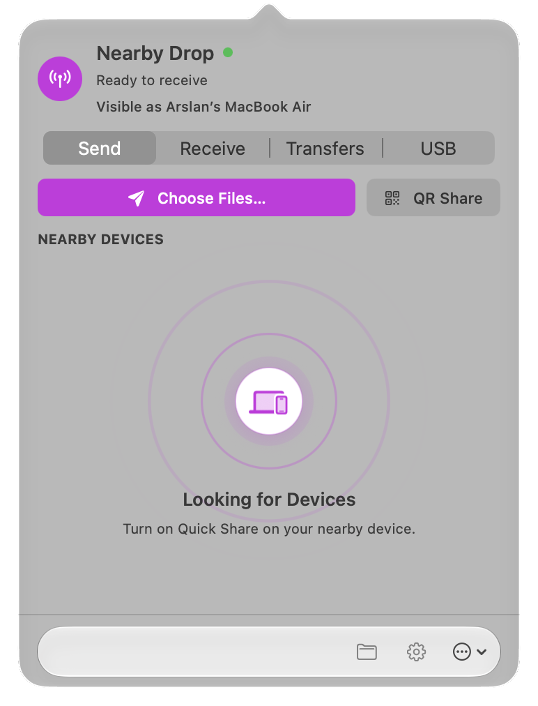

Quick Share, both ways
Send and receive with Android and compatible Windows devices on a reachable local network. The app keeps transfer direction and status visible.
Quick Share for Mac
Nearby Drop puts two-way Android file sharing in your Mac menu bar. Use Quick Share, scan a QR code, connect by USB, or send from Finder.
Free download macOS 14+ Apple silicon and Intel No cloud relay

A clear view of every transfer
Follow incoming and outgoing files in one place. Nearby Drop shows transfer progress, speed and remaining time, then keeps recent activity easy to find.
A few simple steps
Nearby Drop keeps each step in one menu bar window.
Find it in your Mac’s menu bar whenever you need it.
Select files to send, or get your Mac ready to receive.
Use Quick Share, scan a QR code, or plug in over USB.
From your Mac to your phone
Choose files on your Mac and send them to a nearby device. When it’s more convenient, share with a QR code instead.
Read the Mac-to-Android guide
The rest of the workflow
Track progress, choose where files are saved, manage trusted devices and reopen transfers in Finder.
Send and receive with Android and compatible Windows devices on a reachable local network. The app keeps transfer direction and status visible.
Scan an Android Quick Share QR code with the Mac camera, or show a code for a phone to scan.
Browse Android storage over a cable, then upload or download files and folders.
Review recent incoming and outgoing items, see their size and device, and open saved files in Finder.
Choose a download folder, light or dark appearance, an accent color, launch-at-login and sound or haptic feedback.
Manage trusted devices and automatic acceptance. Check for app updates from the About screen.
Designed for nearby sharing
Wireless transfers happen over your local network. Nearby Drop doesn’t relay files through a cloud service. USB transfers use the cable, and recent transfer history stays on your Mac.
If a device does not appear
For Quick Share: keep both devices on a reachable network, turn Quick Share on, and allow Nearby Drop under macOS System Settings → Privacy & Security → Local Network. Guest Wi-Fi, client isolation and some hotspots can block discovery.
For USB MTP: unlock the Android phone, choose File transfer / Android Auto in its USB notification, then open the USB tab in Nearby Drop.
For QR sharing: use the app’s Receive → Scan QR Code flow on the Mac, or show a QR code from the Send screen for the phone to scan.
Practical walkthroughs